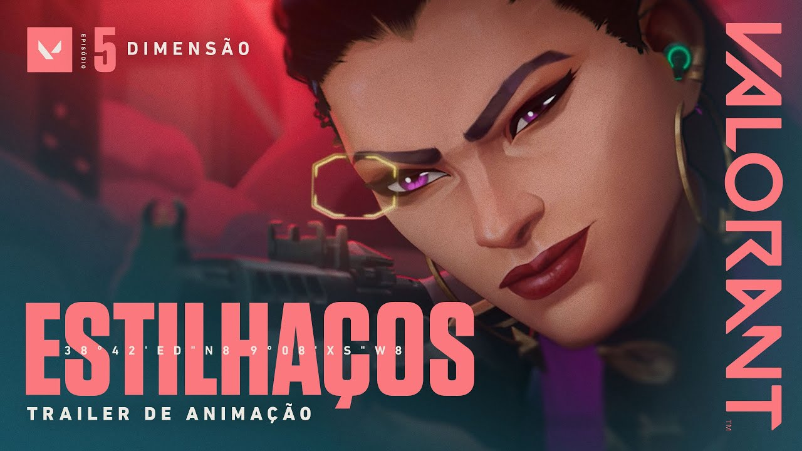
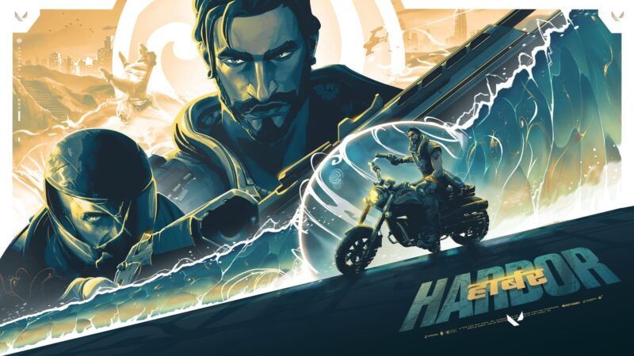

Quais jogos têm mais pro players no Brasil?
Quais jogos têm mais pro players no Brasil?
O mundo dos esports vem crescendo de maneira surpreendente no Brasil desde 2016. Há muitos competidores espalhados pelo país, desenvolvendo-se em diversos campeonatos online de jogos muito populares...

Valorant ganha novo curta animado; confira a ação de Estilhaços!
Valorant é um dos jogos de maior popularidade da atualidade, e a produtora Riot Games segue firme na divulgação do seu FPS que é febre nos esports, desta vez revelando uma nova cinemática chamada Shattered, traduzida como Estilhaços em português. Confira a versão brasileira...

Confira as skills de Harbor, novo agente de VALORANT
O novo agente de VALORANT, Harbor, teve suas habilidades reveladas pela Riot Games nesta quinta-feira (13). O personagem estará disponível na nova Temporada do jogo, que será lançada na próxima terça, dia 18 de outubro...